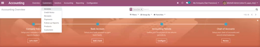
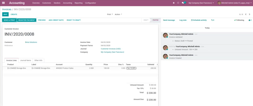
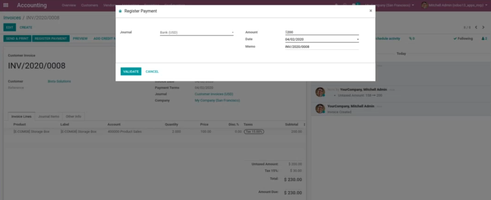
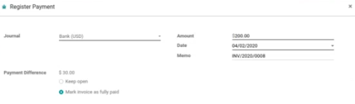
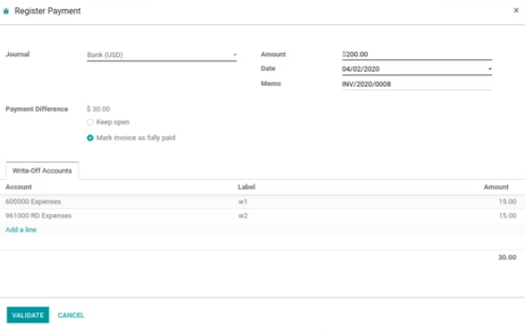
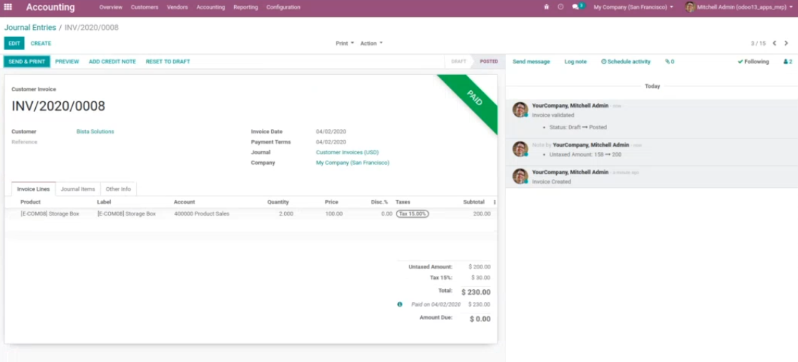

<div class="container">
    <div class="oe_styling_v8">
        <section class="oe_container">
            <div class="mt64 mb64 pt32">
                <h2 class="oe_slogan"
                    style="color: #000;font-family: Roboto,serif;font-weight: 500;text-align:center;text-transform: uppercase;">
                    Account Multiple Write Off (Odoo Enterprise)
                </h2>
                <h5 class="oe_slogan">
                    <p>Traditionally Odoo allows you to write off money into
                        your expense accounts.
                        However, many customers prefer attributing written-off
                        amounts to multiple accounts.
                        With the help of our module, performing this task
                        becomes an easy process.
                        It enables customers to distribute underpaid or
                        overpaid amounts to multiple write-off accounts and
                        mark the
                        invoice as fully paid.</p><br/>
                    <p>
                        Many times, when you create a customer or vendor
                        invoice, you decide that you want to pay less than
                        the amount decided. This usually occurs when there is
                        some short-term payment or opulence done on any
                        invoice or vendor bill. In this case, you will have
                        some amount to be written off. With the help of
                        our module this process can be conducted with just the
                        click of a few buttons.

                    </p><br/>
                    <P>
                        For instance, if you have an invoice for $180 but you
                        want to pay the vendor only $170, you can write-off the
                        remaining $10. Odoo also allows you to push this $10
                        into any of your expense accounts. However,
                        our module goes above and beyond this feature and
                        allows you to distribute this $10 in multiple accounts.
                        For example, you can write off $5 to one expense
                        account and $5 to another.
                    </P>

                </h5>
            </div>
        </section>
        <section class="oe_container">
            <div id="bista_tabs" class=""
                 style="padding:64px 0;margin: 100px 0;background-color:#F0F4F7;">
                <ul role="tablist" class="nav nav-tabs justify-content-center"
                    data-tabs="tabs"
                    style="border: none;background: unset;">
                    <li class="nav-item active"
                        style="border-top-right-radius: 6px;border-top-left-radius: 6px;background: linear-gradient(to top, #FDB525, #FDB525);margin-right: 1px;padding-bottom: 2px;">
                        <a id="features-tab" href="#bista_features"
                           data-toggle="tab"
                           class="nav-link active" role="tab"
                           style="font-family: Roboto,serif;text-transform: uppercase;font-weight: 600;font-size: 15px;letter-spacing: 1px;padding: 10px 20px;border-top-left-radius: 5px;border-top-right-radius: 5px;color: #2b2b2b;">Features
                        </a>
                    </li>
                    <li class="nav-item"
                        style="border-top-right-radius: 6px;border-top-left-radius: 6px;background: linear-gradient(to top, #FDB525, #FDB525);margin-right: 1px;padding-bottom: 2px;">
                        <a id="screenshots-tab" href="#bista_screenshots"
                           data-toggle="tab"
                           class="nav-link" role="tab"
                           style="font-family: Roboto,serif;text-transform: uppercase;font-weight: 600;font-size: 15px;letter-spacing: 1px;padding: 10px 20px;border-top-left-radius: 5px;border-top-right-radius: 5px;color: #2b2b2b;">Screenshots
                        </a>
                    </li>
                    <li class="nav-item"
                        style="border-top-right-radius: 6px;border-top-left-radius: 6px;background: linear-gradient(to top, #FDB525, #FDB525);margin-right: 1px;padding-bottom: 2px;">
                        <a id="video-tab" href="#bista_video" data-toggle="tab"
                           class="nav-link" role="tab"
                           style="font-family: Roboto,serif;text-transform: uppercase;font-weight: 600;font-size: 15px;letter-spacing: 1px;padding: 10px 20px;border-top-left-radius: 5px;border-top-right-radius: 5px;color: #2b2b2b;">Video/Blog
                        </a>
                    </li>
                </ul>
                <div id="bista_tabs_content_ept" class="tab-content"
                     style="background: #fff;border-radius: 10px;padding: 2%;margin: 0 2%;padding-top:4%;">
                    <!-- Features Tabs -->
                    <div class="tab-pane active" id="bista_features"
                         role="tabpanel" aria-labelledby="features-tab">
                        <div class="container">
                            <section id="other-legal-references">
                                <h3 class="text-center alert"
                                    style="font-family: Roboto,serif;font-weight:500;color: #000;background: #F0F4F7;border-radius: 10px;">
                                    Basic Features:
                                </h3>
                                <ul>
                                    <li>
                                        <i class="fa fa-check text-primary"></i>No
                                        specific configuration is required to
                                        enable the feature. Just install the
                                        module and use it.
                                    </li>
                                    <li>
                                        <i class="fa fa-check text-primary"></i>Only
                                        users with access to payments in
                                        Accounts receivable and accounts
                                        payable respectively may access the
                                        feature, however no group control is
                                        applied on the feature itself.
                                    </li>
                                    <li>
                                        <i class="fa fa-check text-primary"></i>Although
                                        no restriction is kept for using the
                                        accounts to post the difference amount,
                                        it is suggested to use expense accounts
                                        and other income accounts while
                                        processing customer invoice and vendor
                                        bill payments respectively.
                                    </li>
                                    <li>
                                        <i class="fa fa-check text-primary"></i>No
                                        menu items are created for this.
                                    </li>
                                    <li>
                                        <i class="fa fa-check text-primary"></i>It
                                        does not creates or results in any
                                        specific reports of its own.
                                    </li>
                                </ul>
                            </section>
                            <div class="row">
                                <!--                        <div class="col-md-12 mb-5">-->
                                <!--                           -->
                                <!--                        </div>-->
                                <div class="col-md-12 mb-4">
                                    
                                </div>
                            </div>
                        </div>
                    </div>
                    <div class="tab-pane" id="bista_screenshots"
                         role="tabpanel" aria-labelledby="screenshots-tab">
                        <section class="oe_container">
                            <div class="alert alert-info">
                                <i class="fa fa-list-ul"></i>
                                <b>Let's see how this can be done:</b>
                            </div>
                            <div>
                                <div class="oe_row oe_spaced">
                                    <div class="oe_centered">
                                        <ul>
                                            <li>
                                                To get started take the
                                                invoicing module and select
                                                Invoices’ under the ‘customers’
                                                menu.
                                            </li>
                                        </ul>
                                    </div>
                                    <div class="oe_demo oe_picture oe_screenshot">
                                        
                                    </div>
                                </div>
                                <div class="oe_row oe_spaced">
                                    <div class="oe_centered">
                                        <ul>
                                            <li>
                                                Once the invoice has been
                                                opened, you will see this
                                                screen in front of you. Click
                                                on register payment.
                                            </li>
                                        </ul>
                                    </div>
                                    <div class="oe_demo oe_picture oe_screenshot">
                                        
                                    </div>
                                </div>
                                <div class="oe_row oe_spaced">
                                    <div class="oe_centered">
                                        <ul>
                                            <li>
                                                Once you click on register
                                                payment, you will see a pop-up.
                                                In the pop-up box, enter the
                                                amount you would like to pay.
                                                So while the invoice says that
                                                that amount is $230, we are
                                                entering $200 as the payable
                                                amount.

                                            </li>
                                        </ul>
                                    </div>
                                    <div class="oe_demo oe_picture oe_screenshot">
                                        
                                    </div>
                                </div>

                                <div class="oe_row oe_spaced">
                                    <div class="oe_centered">
                                        <ul>
                                            <li>
                                                The software will identify a
                                                payment difference of $30.
                                                After that click on ‘mark
                                                invoice as fully paid’.
                                            </li>
                                        </ul>
                                    </div>
                                    <div class="oe_demo oe_picture oe_screenshot">
                                        
                                    </div>
                                </div>
                                <div class="oe_row oe_spaced">
                                    <div class="oe_centered">
                                        <ul>
                                            <li>
                                                You can now choose where you
                                                would like to distribute these
                                                expenses, by entering them
                                                under "the write-off accounts"
                                                tab. Here, we are attributing
                                                $15 as one expense and $15 as
                                                another. Once you have
                                                completed the attribution,
                                                click on ‘validate’.
                                            </li>
                                        </ul>
                                    </div>
                                    <div class="oe_demo oe_picture oe_screenshot">
                                        
                                    </div>
                                </div>
                                <br/>
                                <br/>
                                <br/>
                                <br/>
                                <br/>
                                <div class="oe_row oe_spaced">
                                    <div class="oe_centered">
                                        <ul>
                                            <li>
                                                After this, you can go to the
                                                journal entry and recheck the
                                                amount as it will start
                                                reflecting in the entries
                                                immediately. Our module makes
                                                this process seamless.
                                            </li>
                                        </ul>
                                    </div>
                                    <div class="oe_demo oe_picture oe_screenshot">
                                        
                                    </div>
                                </div>
                            </div>
                        </section>
                        <section class="oe_container oe_dark">
                            <div class="oe_row oe_spaced">
                                <div class="oe_centered">
                                    <p>
                                        <B>We at Bista understand how important
                                            your finance needs are, which is
                                            why no specific configuration is
                                            required
                                            to enable this feature, all you
                                            have to do is to download it!
                                            <br/>Reach out to us if you have
                                            any queries.</B>
                                    </p>
                                </div>
                            </div>
                        </section>
                    </div>
                    <div class="tab-pane" id="bista_video" role="tabpanel"
                         aria-labelledby="video-tab">
                        <div class="container mb32">
                            <hr style="border-top: 1px solid #eee;margin: 5px 0;padding: 0;">
                            <div style="padding: 10px 15px;">
                                <a href="https://www.bistasolutions.com/resources/blogs/odoo-11-accounting-nsf-check-module/"
                                   style="color: #000;" target="_blank">
                                    <p class="mb0" style="">
                                        <span>BLOG</span>
                                    </p>
                                </a>
                            </div>
                            <hr style="border-top: 1px solid #eee;margin: 5px 0;padding: 0;">
                            <div style="padding: 10px 15px;">
                                <!--                        <iframe width="560" height="315" src="https://www.youtube.com/embed/w4jUb8dniW0" frameborder="0"-->
                                <!--                                allow="accelerometer; autoplay; encrypted-media; gyroscope; picture-in-picture"-->
                                <!--                                allowfullscreen>-->
                                <!--                        </iframe>-->
                                <a href="https://www.youtube.com/watch?v=bqwdsFTmwb0"
                                   style="color: #000;" target="_blank">
                                    <p class="mb0" style="">
                                        <span>Watch Video Tutorial</span>
                                    </p>
                                </a>
                            </div>
                        </div>
                    </div>
                </div>
            </div>
        </section>
        <section class="oe_container">
            <div class="row mb64"
                 style="display: block;margin: 0 auto;width: 100%;text-align: center;">
                <div class="mt32" style="display: inline-block;margin:0 10px;">
                    <a href="https://www.bistasolutions.com/contact-us/contact-form/"
                       target="_blank"
                       style="font-family: 'Montserrat',serif;">
                        <h4 class="mt16 mb0"
                            style="padding: 16px 45px;font-family:'Montserrat',serif;text-transform: uppercase;background: linear-gradient(to right, #FDB525, #FDB525);text-align: center;box-shadow: 2px 1px 12px 3px #ece6e6;border-radius: 10px;color: #fff;font-weight: 700;">
                            Contact Us
                        </h4>
                    </a>
                </div>
            </div>
        </section>
    </div>
</div>